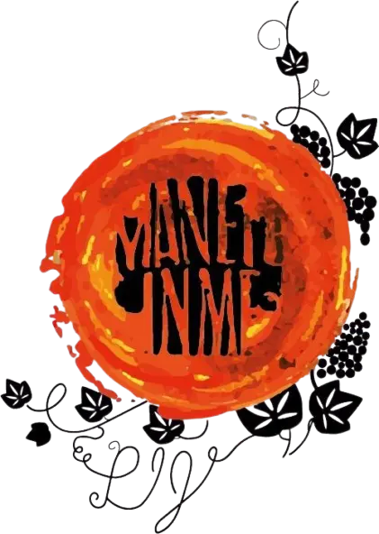
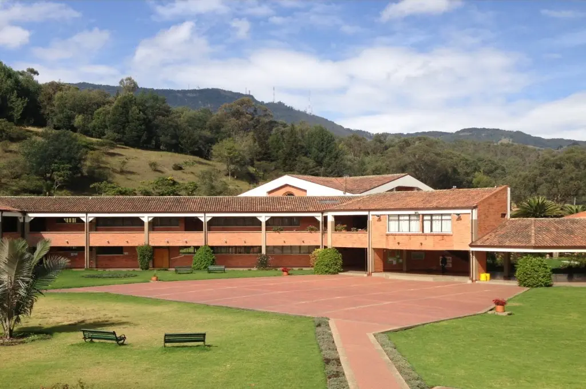
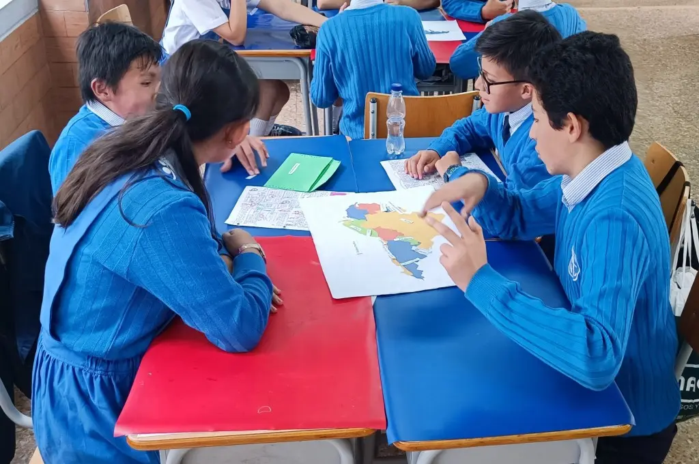
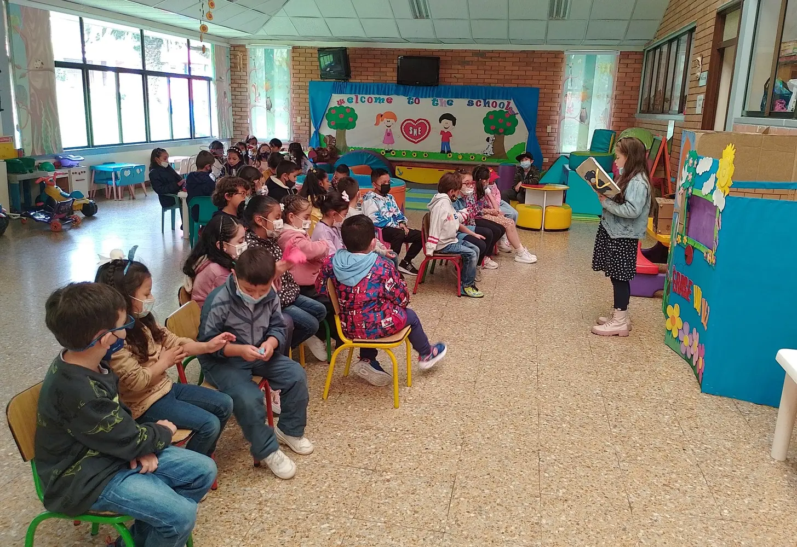
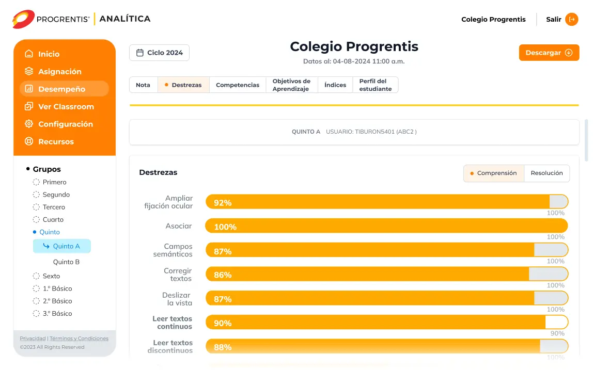
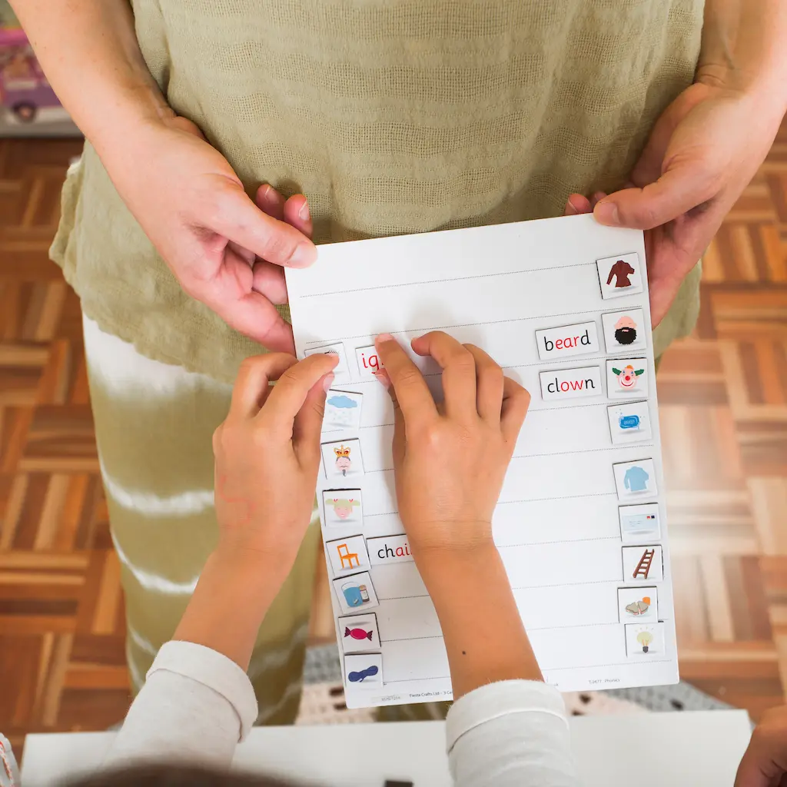

Bienvenidos al Colegio Santa María de la Esperanza
Obra apostólica de la Comunidad de Hermanas del Niño Jesús Pobre.
¿Por qué Elegirnos?
37 años
Educando niños, niñas y jóvenes
Énfasis
en Inglés
Jardín a 11°
Formación Integral
Innovación
Modelo pedagógico
JUL 26
Open Campus I
AGO 1
Festival Musical
AGO 21
English Day
SEP 8
Día del Colegio
SEP 14
Día de Familia
Somos Luz y Esperanza para el mundo de hoy.
Contamos con amplios espacios y desarrollamos actividades diversas que buscan que nuestros estudiantes desarrollen habilidades no solo académicas; desde preescolar hasta grado undécimo, cada niño, niña y joven encontrará en nuestro colegio espacios y actividades que le permitirán aprender con alegría y poner en práctica sus conocimientos.
Ubicados en Facatativá Cundinamarca, no solo ofrecemos formación a sus habitantes, sino que también acogemos estudiantes de municipios cercanos, como lo son Bojacá, Zipacón, Madrid o Mosquera, quienes encuentran en nuestro colegio un espacio donde se les brinda una educación integral y de calidad.
35+
Años de labores
Facatativá
Cundinamarca
Pruebas Saber 11°
Categoría A

Hermanas del Niño Jesús Pobre
Provincia de Colombia


Nuestra Misión
Formar integralmente personas desde un enfoque diferencial, que vivan su misión de cristianos católicos, desde la búsqueda de la excelencia, el respeto, la comunión y el servicio para la transformación de Colombia.
Nuestra Visión
A 2026 nuestro Colegio Santa María de la Esperanza se ve como una institución reconocida por su excelencia en formación integral, por su esfuerzo diario por construir una sana convivencia para la paz y por el compromiso solidario con el más necesitado, desde la espiritualidad de las Hermanas del Niño Jesús Pobre.
Nuestros valores
Brindamos una formación integral buscando la calidad en todos los aspectos desde las estrategias pedagógicas y principios que han sido legados por nuestra fundadora Madre Clara Fey y llevan a nuestros educandos al desarrollo de todas las dimensiones (Espiritual, afectiva, cognitiva, interpersonal, física y estética). Desde luego es una acción fundamentada en los valores de la Fe, la Solidaridad, la Responsabilidad, la Verdad y el Respeto.
Formación SME
En Santa María de la Esperanza cada espacio, ya sea, académico, deportivo, artístico o cultural, es propicio para educar a niños, niñas y jóvenes.

Talleres Integrados
Ofrecemos espacios donde los estudiantes desarrollan talentos e intereses en áreas como deporte, arte, ciencia y cultura, a través de talleres como fútbol, teatro o semilleros.
Semillero de deportistas
Contamos con espacios ideales para el deporte y una destacada participación en competencias municipales, formando estudiantes con disciplina y espíritu deportivo.
Arte y Cultura
Celebramos el arte con eventos que integran a toda la comunidad: festivales, muestras culturales y el Día de la Familia reflejan nuestro compromiso con la expresión y la creatividad.
Inglés y Tecnología
Nuestro colegio fortalece el dominio del inglés y promueve el pensamiento lógico a través de la tecnología, la robótica y la programación.
Excelencia en Educación con sello PIJ
El Colegio Santa María de la Esperanza se ha destacado por más de 35 años en la formación de niños, niñas y jóvenes, dejando una huella profunda en cada estudiante, egresado y sus familias. Su identidad se fortalece con el sello espiritual y pedagógico de la Congregación de Hermanas del Niño Jesús Pobre, que inspira cada proceso educativo con valores y compromiso social, continuando el legado de la Beata Clara Fey.

Progrentis
Contamos con la plataforma líder en entrenamiento estudiantil, para potenciar las destrezas cognitivas.
Simulacros Pruebas saber
Porque pensamos en el presente y futuro de nuestros estudiantes, realizamos simulacros que los preparan para las pruebas de estado y tembien les permiten desarrollar habilidades desde edades tempranas.

Innovación y aprendizaje
Destrezas y Rutinas del pensamiento son usadas como herramientas dentro del proceso de innovación pedagógica.
Datos SME
Porque debes estar al día con la información de nuestra comunidad educativa, te dejamos 3 datos que te pueden interesar: